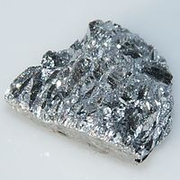

Numero atomico: 51
Massa atomica: 121,8
Temperatura di fusione (°C): 631
Temperatura di ebollizione (°C): 1587
Energia di prima ionizzazione (kj/mol): 834
Elettronegatività (secondo Pauling): 2,05
Densità: 6,68
Numeri di ossidazione: ±3+5
Configurazione elettronica: 1s2, 2s2, 2p6, 3s2, 3p6, 3d10, 4s2, 4p6, 4d10, 5s2 5p3
Maggiori Informazioni